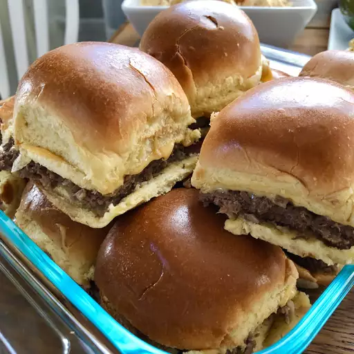

Pesto pasta with chicken

Description
White Castle sliders are well known in the Chicago area. I believe down South they are called Krystals. This copycat recipe is the closest I have come to the real deal. Serve each slider with American cheese, dill pickle slices, and Düsseldorf mustard.
This meal can be made under 25 min and served up to 24 persons
Ingredients
- 1 ½ pounds ground chuck
- ⅓ cup plain bread crumbs
- 1 large egg
- 1 (1 ounce) package dry onion soup mix
- 2 tablespoons water
- ½ teaspoon ground black pepper
- 24 small square dinner rolls
Step by step guide:
- Preheat the oven to 400 degrees F (200 degrees C)
- Combine ground chuck, bread crumbs, egg, onion soup mix, water, and black pepper in a bowl; press into a 10x15-inch jelly roll pan. Prick holes through the chuck mixture for ventilation while cooking.
- Bake in the preheated oven until browned and cooked through, about 10 minutes. An instant-read thermometer inserted into the center should read at least 160 degrees F (70 degrees C). Drain excess grease.
- Cut chuck mixture into squares the size of the rolls. Place 1 chuck patty in each roll.